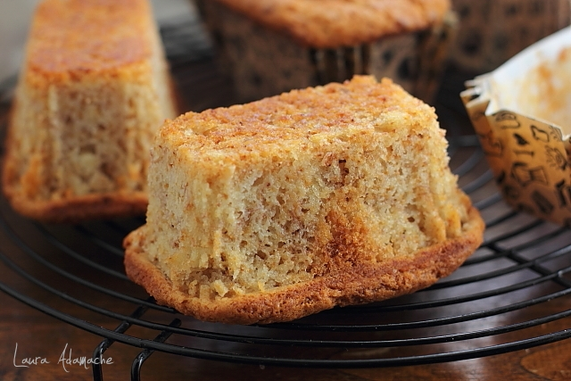
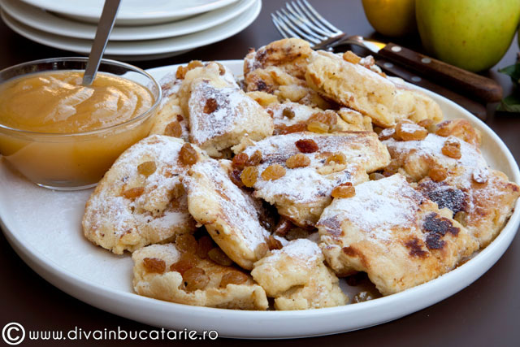
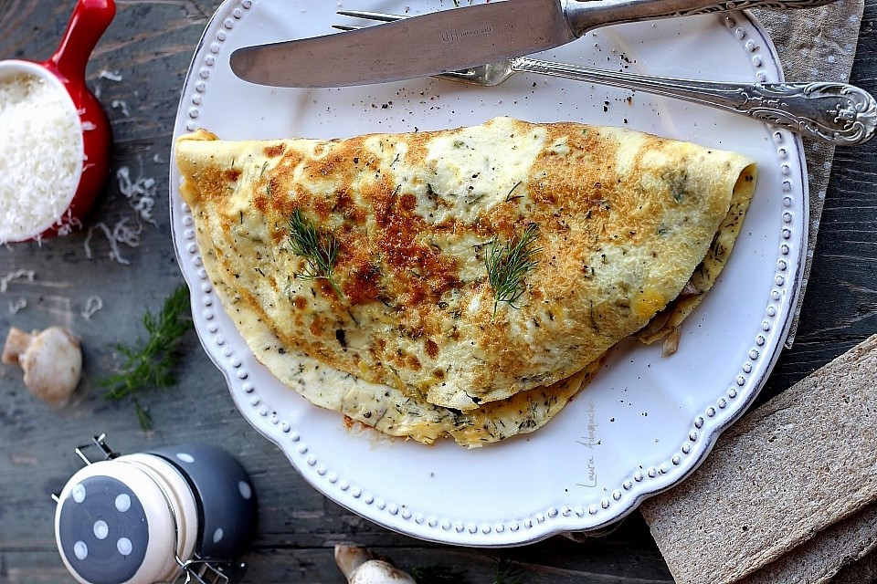

Mic dejun, idei retete simple pentru cei dragi
Retete sarate si dulci pentru un mic dejun sanatos si imbelsugat. Retete pentru micul dejun in familie, idei de retete mic dejun pentru copii. Prima masa a zilei, micul dejun, este foarte importanta pentru toti. Acesta trebuie sa fie bogat in alimente cu o valoare energetica mare (oua, branza, cereale, fructe, marmelada, sunca etc). Micul dejun se serveste cu bauturi calde sau suc.
Va astept cu drag sa va insiprati din aceasta categorie pentru masa de dimineata.
1) Muffins(briose) cu banane si iaurt – Ingrediente (8 muffins)
|
·1 banana mare bine coapta
·125 g iaurt natural/iaurt de banane
·1 cutie de iaurt plina cu zahar brun fin
·2 cutii de iaurt cu faina
·1 cutie de iaurt cu ulei
·1 plic praf de copt
·1 varf de cutit de sare
|
|

|
Curatam banana, o taiem in bucatele si o punem intr-un vas. O pasam cu furculita pana cand obtinem un piure. Adaugam zaharul si sarea, amestecam, apoi adaugam iaurtul si uleiul si amestecam pana la omogenizare. Amestecam faina si praful de copt si cernem rezultatul direct in compozitia de banana. Amestecam pana cand obtinem un aluat omogen, nu mai mult (in 2 minute faina este deja inglobata in compozitie). Umplem pe trei sferturi hartiutele de muffins, pozitionate in tava de muffins. Coacem pufosii nostri muffins cu banana si iaurt, in cuptorul preincalzit la 180°C, pentru cca 20-25 minute.
Nu uitati sa faceti proba cu scobitoarea inainte de a scoate muffins din cuptor. Daca scobitoarea iese umeda, le mai lasati la copt inca 5 minute si apoi repetati testul.
In continuare scoatem muffins din cuptor, le scoatem din tava si le punem pe un gratar unde le vom lasa sa se raceasca complet. Inainte sa le gustam, le pudram cu zahar pudra vanilat sau, daca doriti, le ornati cu cicolata neagra topita. Sunt atat de pufosi si au un gust intens de banana.
Pofta buna!
2) Kaiserschmarrn clatite pufoase austriece
Kaiserschmarrn sau Kaiserschmarren clatite austriece pufoase rupte in bucatele. Clatitele austriece maruntite se numarau printre deserturile preferate ale imparaturui Franz Joseph. Printre primele deserturi savurate in Austria se numara si aceste clatite pufoase Kaiserschmarrn (clatitele imparatului). Spre deosebire de numele putin mai greu de pronuntat, prepararea este foarte simpla si rapida. Aluatul seamana foarte mult cu cel de clatite americane. Acest desert, in ciuda aspectului rustic, are un gust minunat. Clatitele Kaiserschmarrn se maruntesc in bucatele si se servesc pudrate cu zahar si gem. Mie imi place sa le mananc cu gem de afine sau caise si uneori cu sirop de artar. Iata ca, pe langa multe preparate faimoase create din greseala (Tarte Tatin, crema ganache), clatitele austriece pufoase maruntite au devenit populare in urma unei erori a bucatarului imparatului Franz Joseph. Se spune ca intr-o seara, imparatul i-a cerut bucatarului sa ii pregateasca o clatita, dar acesta a uitat-o pe foc si cand a vrut sa o intoarca, clatita s-a rupt. Neavand timp sa o faca din nou, a decis sa o taie in bucatele mici pe care le-a pudrat cu zahar. Imparatului i-au placut atat de mult aceste bucatele de clatita, incat a dorit ca din acea zi sa ii fie preparate doar in acest fel.
Aspectul acestor clatite cu stafide nu este nicidecum uimitor, dar gustul lor este delicios. Este un desert simplu, chiar foarte simplu, as spune, dar care are in spate o istorie frumoasa. Preparare pas cu pas si ingrediente pentru clatite pufoase cu stafide si zahar pudra:
Kaiserschmarrn – Ingrediente (1 clatita 26 cm Ø):
|
·3 oua
·75 g faina
·50 ml lapte
·50 ml smantana naturala lichida pentru frisca
·25 g zahar
·1 plic zahar vanilat/ 1 pastaie de vanilie (doar semintele)
·15 g unt (pentru prajit)
·30 g stafide inmuiate in 2 linguri de rom
·un varf cutit sare
·zahar pudra vanilat (pentru pudrat)
·zahar pudra vanilat (pentru pudrat)
|
|

|
Din ingredientele de mai sus obtineti o clatita de 26 cm Ø, groasa de cca 3-4 cm. Este suficienta pentru doua persoane sau pentru o singura persoana mai pofticioasa. Daca sunteti fani clatite pufoase, dublati gramajul ingredientelor!
Pentru inceput, punem stafidele intr-un vas micut si adaugam romul. Daca nu aveti sau nu doriti sa folositi rom, il puteti inlocui cu esenta de rom. Lasam stafidele la inmuiat cca 15 minute.
Separam albusurile de galbenusuri si le punem in doua vase separate.
Intr-un vas, amestecam galbenusurile cu faina cernuta, apoi adaugam laptele, smantana lichida, zaharul si plicul de zahar vanilat. Adaugam stafidele in aluat. Amestecam pana cand obtinem o crema omogena.
Intr-un vas separat, punem albusurile si un varf de cutit de sare. Le mixam pana nu mai cad de pe paletele mixerului. Incorporam cu mare grija albusurile in aluatul de clatite, amestecand de jos in sus. Punem untul intr-o tigaie antiaderenta, pe foc mic. In momentul in care untul s-a topit, adaugam aluatul de clatita.
Prajim clatita cca 2-3 minute sau pana cand observam ca suprafata s-a umplut de mici basicute. In acest moment taiem clatita in patru bucati. Intoarcem bucatile pe cealalta parte si le mai prajim inca 1-2 minute. Dupa 1-2 minute, taiem bucatile de clatita, direct in tigaie, in bucatele mai mici, neregulate.
Putem sa folosim un cutit sau chiar o furculita pentru maruntirea clatitei. Bucatile de clatita nu trebuie sa aiba aceeasi dimensiune.
Scoatem bucatile de Kaiserschmarrn pe o farfurie, le pudram cu zahar vanilat si le gustam fierbinti alaturi de gemul preferat.
Pofta buna!
3) Omleta cu ciuperci si cascaval
Omleta cu ciuperci si cascaval este o mancare simpla, rapida, pentru mic dejun, pranz sau cina. Eu nu refuz niciodata, indiferent de mesele principale ale zilei, o omleta cu ciuperci. Daca sunteti norocosi, poate gasiti hribi proaspeti, daca nu, sunt foarte bune si ciupercile champignon. Omleta la tigaie cu champignon este o reteta simpla, in 20 de minute o avem gata calda si proaspata pe masa. Eu o fac de obicei in weekend, la micul dejun, dar, cand nu am prea mult timp de gatit, o fac si la pranz, cu o salata verde sau de rosii alaturi, este perfecta.
Haideti sa vedem cum se face aceasta reteta de omleta la tigaie, ideala pentru o masa satioasa si mai mult decat gustoasa.
Omleta cu ciuperci – Ingrediente 2 persoane:
|
·4 oua mari
·125 g ciuperci champignon/hribi
·1 catel de usturoi
·50 g cascaval clasic
·2 lingurite marar tocat
·20 g unt
·1 lingura ulei de floarea soarelui
·sare(dupa gust)
·piper proaspat macinat
·optional: cimbru, busuioc, oregano, boia(dulce/iute)
|
|

|
Curatam ciupercile, le stergem cu un servet umed si le taiem in felii subtiri.
Punem uleiul intr-o tigaie antiaderenta, adaugam un catel de usturoi necuratat, dar zdrobit usor cu muchia unui cutit.
Il sotam cca 1 minut, la foc mic, apoi il eliminam din tigaie. Adaugam ciupercile feliate, sare si piper dupa gust.
Calim ciupercile pana cand se inmoaie (4-5 minute), apoi stingem focul. Le acoperim cu un capac pana cand pregatim ouale pentru omleta. Punem ouale intr-un vas, adaugam mararul tocat marunt, sare si piper dupa gust. Le amestecam cu telul sau cu o furculita pana se omogenizeaza, nu mai mult. Intr-o tigaie antiaderenta punem untul si uleiul, iar dupa ce untul s-a topit, adaugam ouale pentru omleta. Cand suprafata omletei se incheaga, adaugam ciupercile si cascavalul ras, pe una dintre jumatatile omletei. Cu o spatula aducem partea opusa goala a omletei peste umplutura.
Prajim omleta inca 2 minute, apoi o scoatem cu grija pe o farfurie. Servim omleta calda, cu putin marar tocat pe deasupra, daca doriti.
Pofta buna!